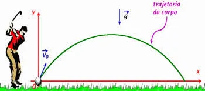

Lançamento Oblíquo
O lançamento oblíquo ou de projétil é um movimento realizado por um objeto que é lançado na diagonal. Esse tipo de movimento realiza uma trajetória parabólica, unindo movimentos na vertical (sobe e desce) e na horizontal. Assim, o objeto arremessado forma um ângulo (θ) entre 0° e 90° em relação a horizontal.
Na direção vertical ele realiza um Movimento Uniformemente Variado (MUV). Já na posição horizontal, o Movimento Retilíneo Uniforme (MRU). Nesse caso, o objeto é lançado com uma velocidade inicial (V0) e está sob a ação da força da gravidade (g). Geralmente, a velocidade vertical é indicado por Vy, enquanto a horizontal é Vx. Isso porque quando ilustramos o lançamento oblíquo, utilizamos dois eixos (x e y) para indicar os dois movimentos realizados.
Principais Características:
Eixo Horizontal (X): Movimento Retilíneo Uniforme (MRU), com velocidade constante.
Na vertical (eixo Y): Movimento Retilíneo Uniformemente Variado (MRUV), sob a ação da aceleração da gravidade (g), que atua freando o objeto na subida e acelerando na descida.
Fórmulas Principais:
Para a direção vertical:
Movimento Uniformemente variado (MUV)
O início do movimento em seu ponto de lançamento, S com 0 subscrito igual a 0.
A velocidade vertical final igual a zero, V = 0.
Sentido positivo para cima.
Desprezamos a resistência do ar.
Posição vertical em função do tempo:
Sy(t) = V0y t ±
Velocidade vertical em função do tempo:
Vy(t) = V0y ± gt
Tempo de subida:
Altura máxima:
Para a direção horizontal:
Movimento Uniforme (MU)
Velocidade constante.
Sem aceleração.
Posição horizontal em função do tempo:
Sx(t) = V0x ⋅ t